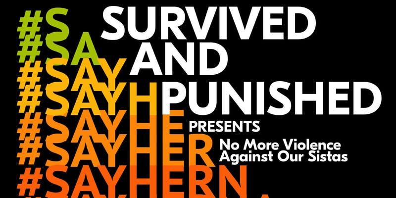

#FreeThemNY Events
Jump to upcoming events, or see documentation of past events.
Upcoming Events
Sharing Stories of Self-Defense and Survival in the #MeToo Era
Thursday, August 9th from 6:30 to 8:30 PM at the Asian American Writers Workshop, 110-112 W. 27th St Ste. 600 (between 6th and 7th Avenues), New York, NY 10001
Past Events
Twitter power hour! 3:00 PM Eastern, Monday August 6th
We used the hashtags #FreeThemNY and #CuomoMIA to let Cuomo know he should commute sentences. We also used the hashtags #FreeThemAll and #SurvivedAndPunished to participate in a conversation beyond New York!On June 18th, members of Survived and Punished joined a group of allies from various organizations and issues to demand Governor Cuomo upholds his commitments, including his commitment to use his clemency powers. Check out a video of the protest here.
No More Violence Against Our Sistas: End Violence Against Black Women and Girls
Wednesday, June 13th, 6-8 PM at Barnard Hall, 3009 Broadway, Room 302
Survived and Punished screened a film about anti-Black gender violence and facilitated a discussion among attendees about how we can end it. Twitter power hour! 6:30 to 7:30 PM, Tuesday June 12th
We used the hashtags #FreeThemNY and #CuomoMIA to let Cuomo know he should commute sentences. This graph helps show how negligent Cuomo is when it comes to commutationsLetter writing to incarcerated survivors of gender violence
Thursday May 31st, 6-8 PM at NYU Department of Social and Cultural Analysis, 20 Cooper Square, Manhattan
Organizing workshop and discussion with Survived and Punished NYC at Bring Down the Walls
Saturday May 19th, 6:30-7:30 PM at Firehouse Engine Company 31, 87 Lafayette Street, ManhattanOn May 10th 2018, members of Survived and Punished NYC protested Governor Cuomo by calling attention to his abysmal clemency track record as his donors entered a beer-tasting fundraiser.
April 14th Mass Commutations Convening at Barnard
Members of Survived and Punished held our first public event with many dozens of people in attendance, including Valerie Seeley, the only survivor of gender violence to have her sentence commuted by Governor Cuomo.